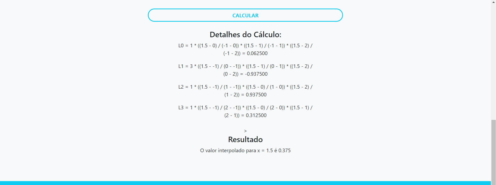
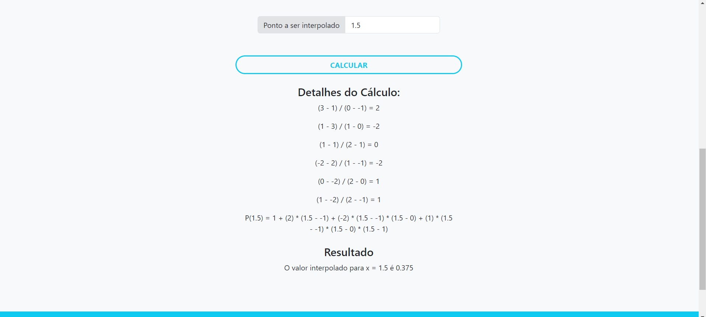
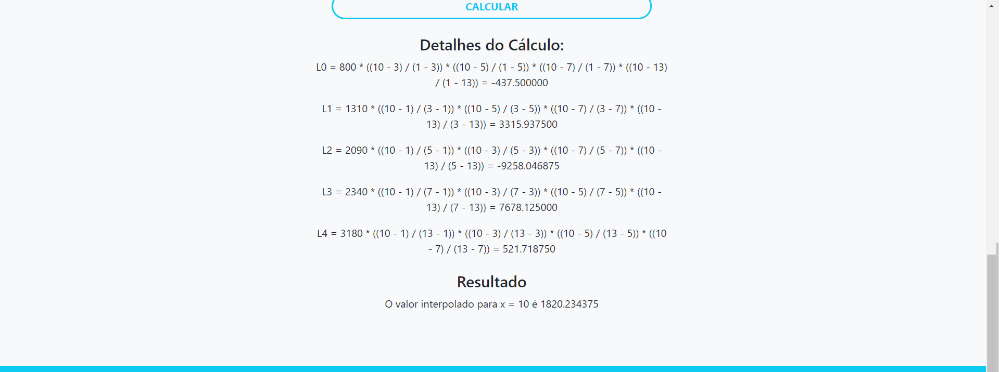
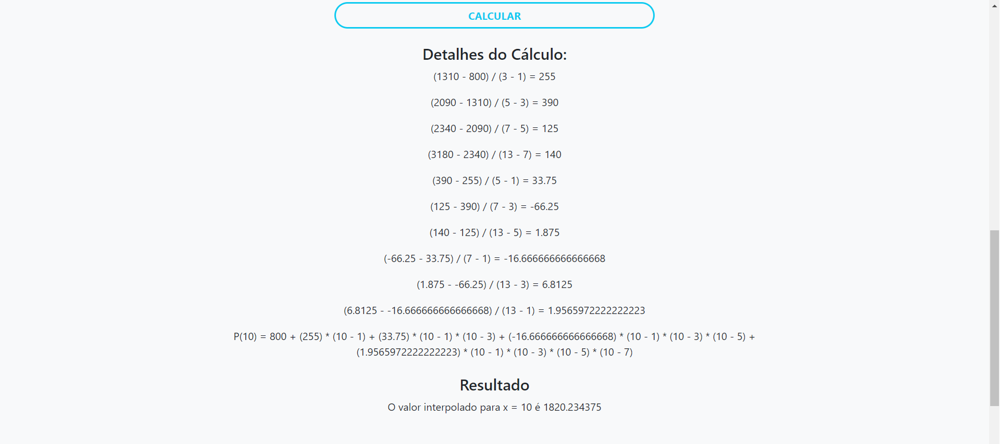
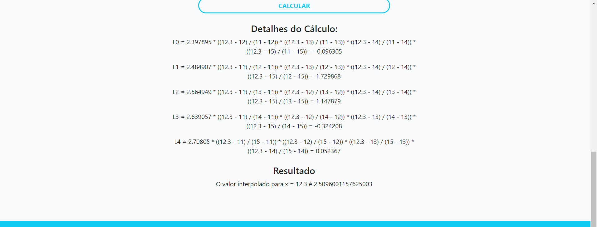
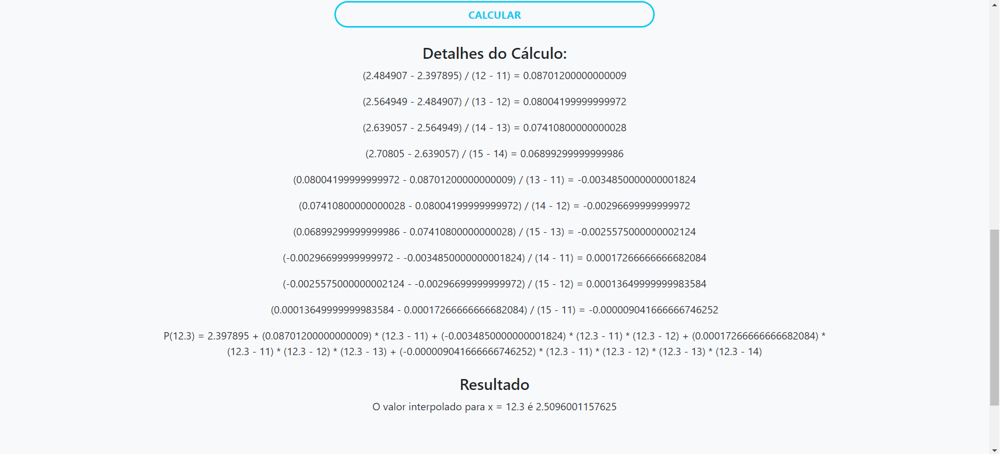

Lista - Usando o Código
Lista - Usando o código
Detalhes da Atividade
- Use os códigos que você desenvolveu para apresentar a solução dos três exercícios apresentados
- Faça um print no seu código em que aparece a resposta no seu código
- Use os dois métodos: Newton e Lagrange
1. Interpolar o ponto x = 1,5 na tabela abaixo, empregando o polinômio interpolador de Lagrange.
| Ponto | X | Y |
|---|---|---|
| 0 | -1 | 1 |
| 1 | 0 | 3 |
| 2 | 1 | 1 |
| 3 | 2 | 1 |
- Usando Lagrange

- Usando Newton

2. A tabela seguinte relaciona a velocidade de queda de um pára-quedistaem função do tempo. Determine a velocidade de queda do pára-quedista ao fim de 10s usando polinômio interpolador de Lagrange
| Ponto | X | Y |
|---|---|---|
| 0 | 1 | 800 |
| 1 | 3 | 1310 |
| 2 | 5 | 2090 |
| 3 | 7 | 2340 |
| 4 | 13 | 3180 |
- Usando Lagrange

- Usando Newton

3. Dada a tabela de função f(x) = ln(x), calcule uma aproximação para o valor f(12.3), usando a interpolação parabólica baseada no método de Lagrange
| Ponto | X | Y |
|---|---|---|
| 0 | 11 | 2,397895 |
| 1 | 12 | 2,484907 |
| 2 | 13 | 2,564949 |
| 3 | 14 | 2,639057 |
| 4 | 15 | 2,708050 |
- Usando Lagrange

- Usando Newton
